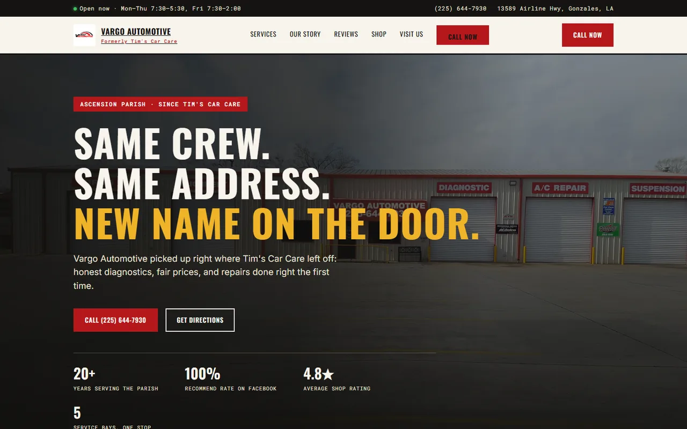
01
Automotive repair
Vargo Automotive
Rebuilt around the shop’s move, with services, reviews, and contact details easy to find.
Independent web design · Louisiana
I design and code custom websites for shops, studios, crews, and people building something of their own.
Selected work · 01
Different businesses need different websites. These were built around the shop, the customer, and the job at hand.

Automotive repair
Rebuilt around the shop’s move, with services, reviews, and contact details easy to find.
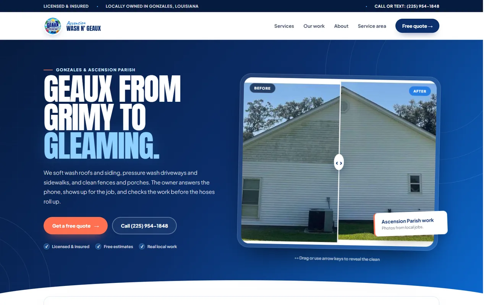
Pressure washing
A before-and-after comparison shows the work before the visitor reads a sales pitch.
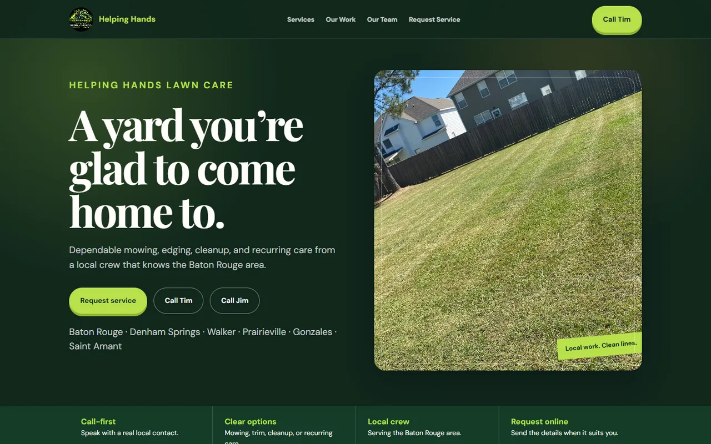
Lawn care
A service-first homepage with local coverage, quick estimates, and photos from real jobs.
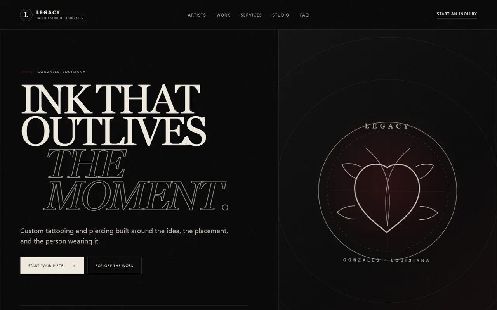
Tattoo studio
A dark studio site that puts artists, portfolios, and booking details ahead of stock imagery.
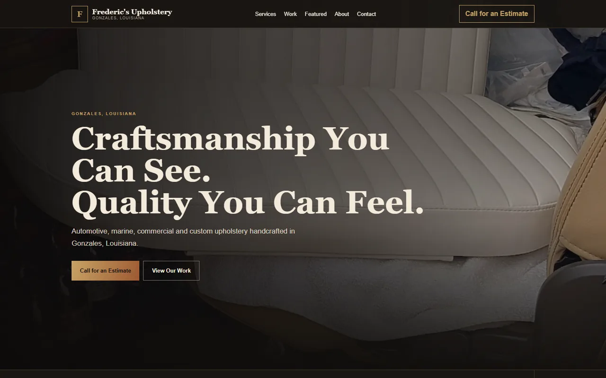
Upholstery
Close-up craft photography meets a clear route to request an estimate.
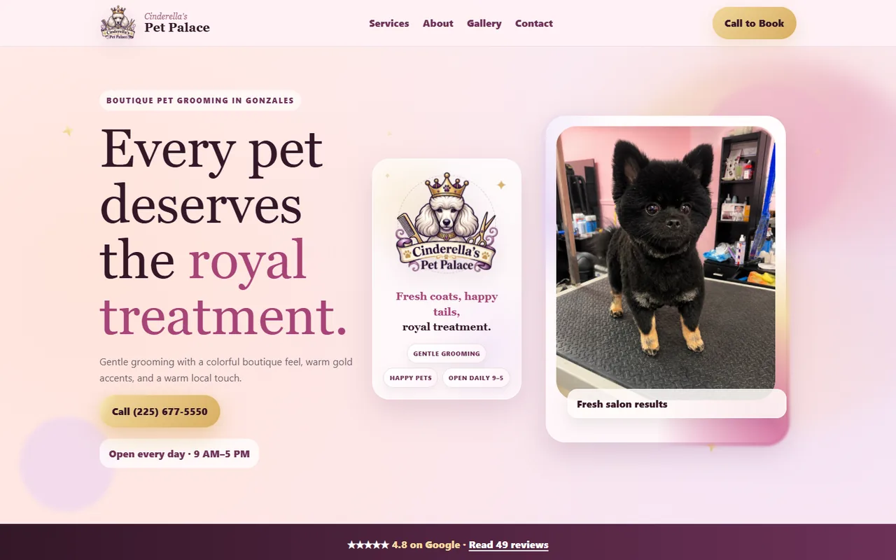
Pet grooming
Hours, services, reviews, and booking information arranged for a quick first visit.
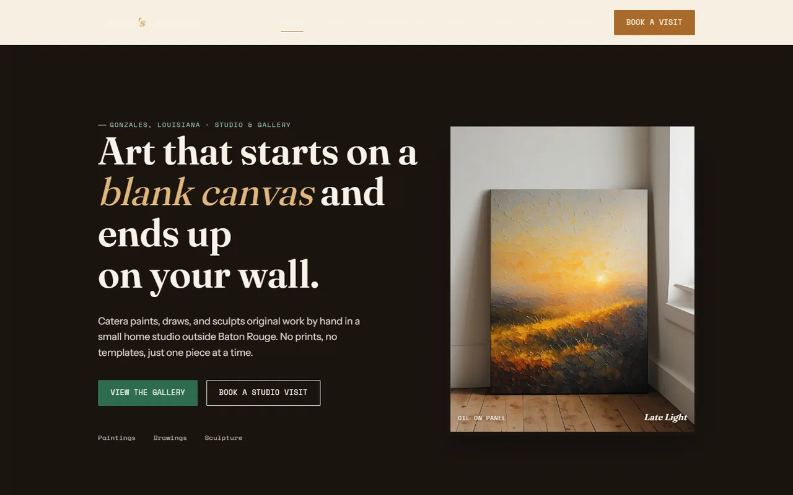
Fine art
An artist portfolio whose quiet palette and spacing leave the paintings room to lead.
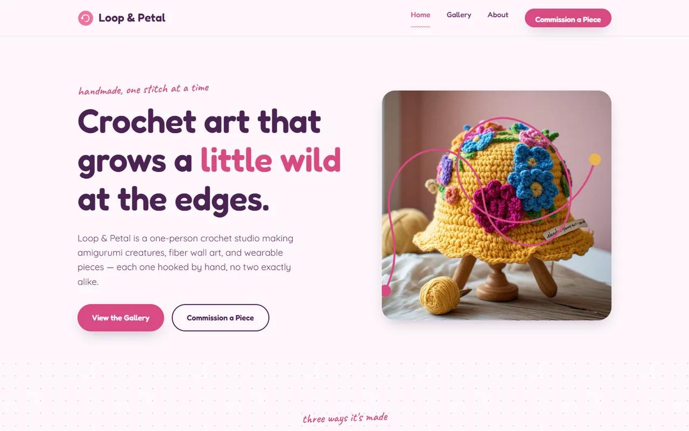
Crochet studio
A playful shop with product photography, commissions, and a voice that fits the maker.
After hours · 02
Games, tools, and experiments I built because the idea would not leave me alone.
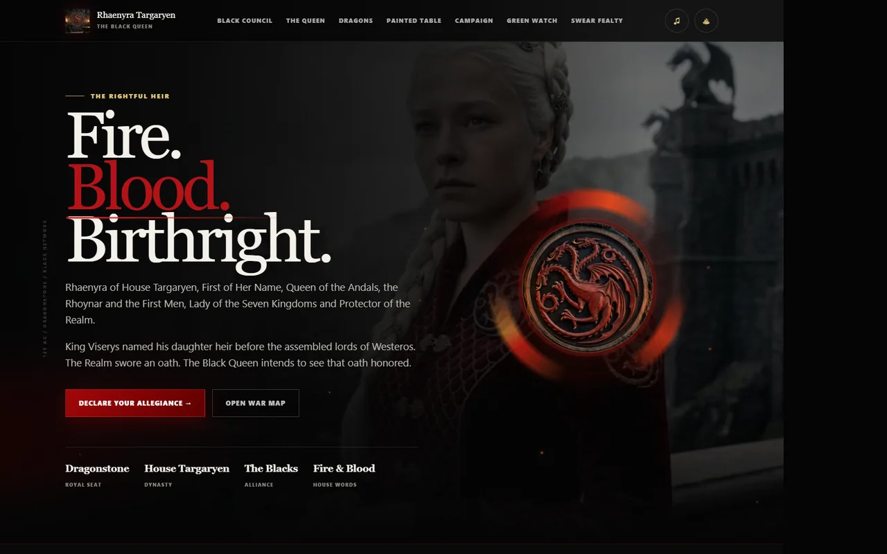
Campaign experience
An interactive house campaign with a live map, dragon roster, and allegiance system.
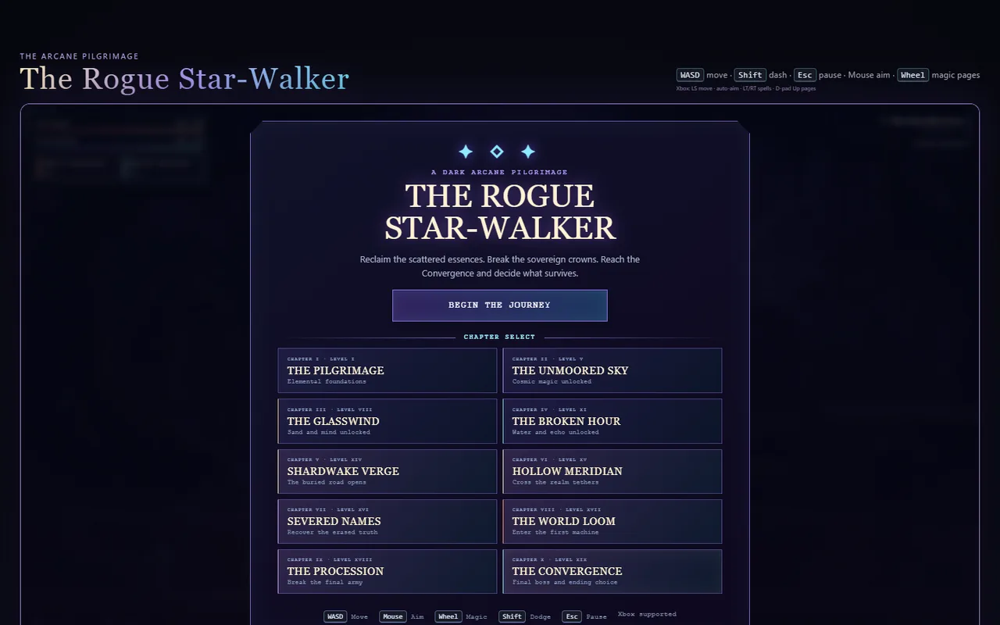
Browser RPG
A playable fantasy campaign with combat, character systems, and a world built for repeat runs.
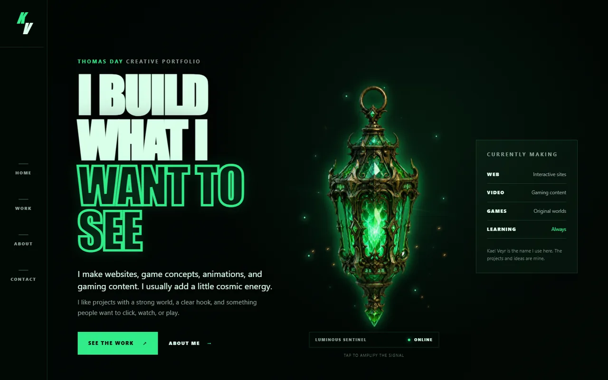
Character world
A neon character site that treats lore, motion, and atmosphere as part of the interface.
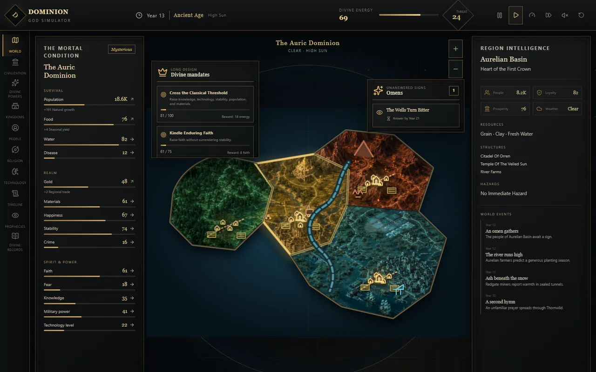
World simulator
A dense world-building interface for shaping terrain, factions, history, and belief.
What I do · 03
No mystery package or agency handoff. You work with me from the first conversation through launch.
A custom site shaped around your business, then coded for phones, tablets, and desktops.
Photo swaps, copy changes, new pages, and seasonal updates when the business changes.
GitHub and Vercel setup, domain connection, and a clean handoff when the site goes live.
How it works · 04
You work directly with Thomas through the whole project.
We talk through the business, the customer, and what the site needs to do.
I turn your photos, colors, references, and priorities into one clear visual route.
I code the site, wire the interactions, and test it across screen sizes.
I connect the domain, deploy the finished site, and show you what happens next.
Start here · 05
Tell me what the business does, what you have now, and what needs to change. I’ll reply with questions and a sensible next step.